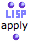
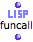
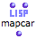
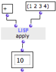
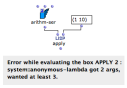
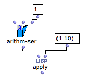

Higher-Order Programs and Functions
In functional languages such as Lisp, programs and data are generally considered as "first-class'' objects[1]. A Lisp function can thus be considered as data and used or constructed in the calculus.
Functions that accept other functions as arguments, or that produce functions as output values are called higher-order functions.
In OM, higher-order programming is mainly possible with boxes in "lambda" evaluation mode.
Some functions are more specifically designed to be called with functional arguments : |    ... |
Using a Lambda Function in OM
In Lisp, apply is one of the simplest example of higher-order function. Apply takes two arguments :
The function on "lambda" mode is applied to each item of the list. In this example, the + is on "lambda" mode : it can return the + function . |  |
When a simple function is involved, its name can be used instead of the function box on "lambda" mode. |  |
In practice, functional arguments are used in two main configurations :
as an argument applied to one or more other arguments by the higher-order function
as a test function to determine the behaviour of a higher-order function.
The following sections detail several typical cases regarding the use of higher-order functions and "lambda" mode.
Inputs of a Lambda Function and Currying
In a higher-order function call, a function may be applied to a number of items. These items are then matched to the different arguments of the function. Hence, one must make sure that this function
has the right number of arguments
an / or
is applied to the right number of items.
Arithm-ser requires 3 arguments : "from", "to" and "step". It is applied to a list of two values only. OM returns an error message. |  |
In some situations, we may want to ignore some of the arguments required by a "lambda" function. In this case we only want to define the bounds of the series : "from", and "to", and ignore "step".
To do so, we need to set one of the variables of the lambda form. This procedure is known as currying[2].
In OM, the arguments of a function box on "lambda" mode are represented by free inputs, and only free inputs. Free inputs are not connected to anything. The values connected to the other inputs are comprised in the lambda function . |  |
- First Class Object
A first-class object is an entity which can be passed as a parameter to a function, returned from a function, or assigned into the variable of a program.
- Currying
Reducing the number of arguments of a lambda function by assigning values to some of them.